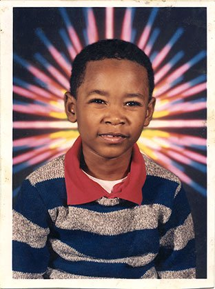
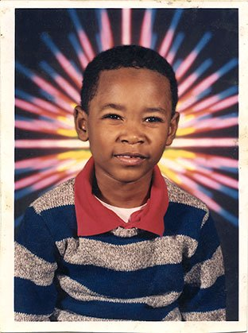

Danny Brown's background
Danny Brown, whos birth-name is Daniel Dewan Sewell, was born in Detriot, Michigan on March 16th, 1981. His mother at the time of the birth was 18, and his father was 16 years old. Danny Brown was able to rhyme very well from a very young age. His mother would read Dr. Seuss books to him when he was a little boy, and when he started to speak, he would speak in rhyme. He was exposed to everything the music his father, a house DJ, would spin, as well as songs by artists like LL Cool J, Esham, Roy Ayers, and A Tribe Called Quest. Brown has always wanted to be a rapper for as long as he could remember: "When I would announce in kindergarten that I wanted to be a rapper, people would just laugh at me. "They would say, 'That's a pretty funny job."
Danny Brown's teenage years
 
